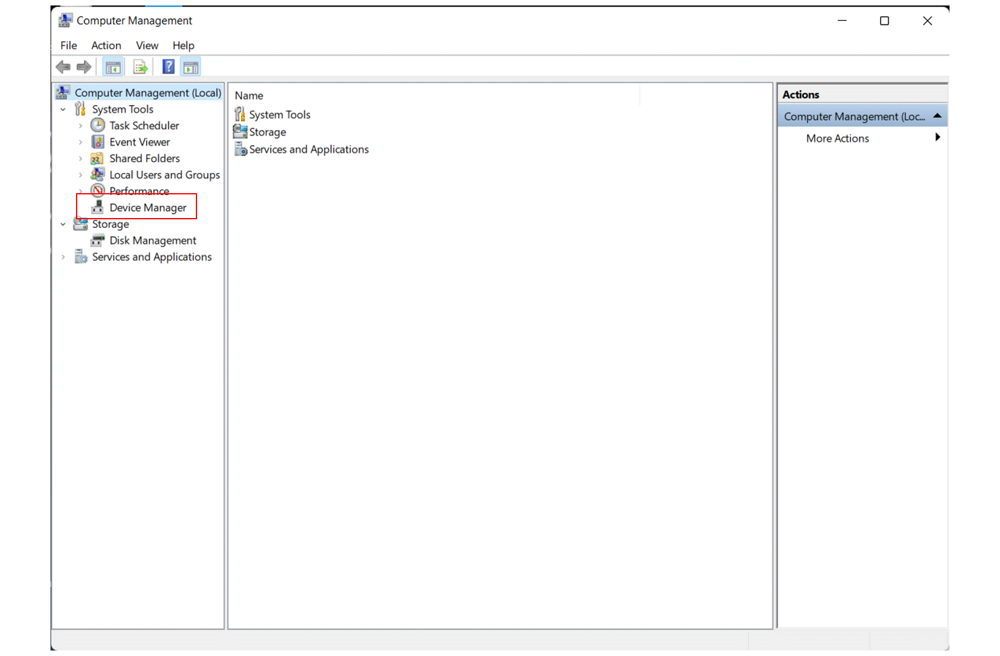
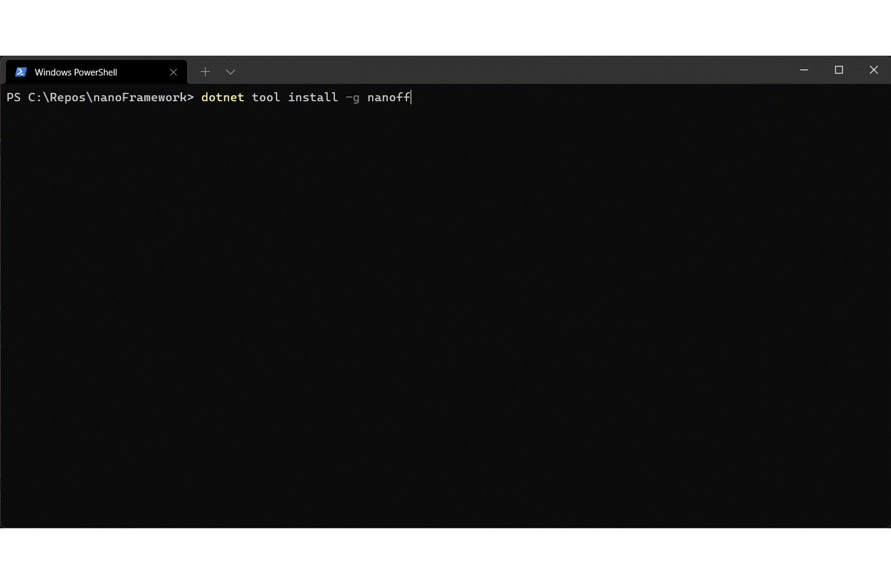

Getting Started Guide for managed code (C#)
.NET nanoFramework enables the writing of managed code applications for embedded devices. Doesn't matter if you are a seasoned .NET developer or if you've just arrived here and want to give it a try.
This getting started guide will walk you through the setup of your development machine to get you coding a nice "Hello World" in no time!
You can find the video for this guide on our YouTube channel here.
Note sure where to buy a device? Check this page out!
Installing and configuring Visual Studio 2022
The first part is to get Visual Studio 2022 (VS 2019 is also supported) and the .NET nanoFramework extension installed.
WARNING: Our extension is maintained and kept up to date with the current version of VS2022 and VS2019. Generally only the latest version of Visual Studio is guaranteed to be supported. If you experience difficulties installing the extension, check that you are running the latest VS.NET version. If you need an older version for a specific VS version, you can download it from the GitHub repository.

Download Visual Studio
If you already have it installed, you can skip this step. If you don't, please download the free Visual Studio Community edition. Make sure to install the workloads for .NET desktop development and .NET Core cross-platform development.Install the nanoFramework extension for Visual Studio
Launch Visual Studio (we'll just refer to it as VS from now on) and install the nanoFramework extension.
You can do this by selecting the menu Extensions > Manage Extensions which will open the Manage Extensions dialog. Select the Online feed category on the left-hand and enter nanoFramework in the search box.You will be prompted to restart Visual Studio to finish installing the extension
Uploading the firmware to the board using nanoFirmwareFlasher
The second part is to load the .NET nanoFramework image in the board flash. The best way is to use the nano Firmware Flasher (nanoff) tool. This is a .NET Core CLI command tool.
You need to know the COM Port attached to your device. Search for Computer Management, select Device Manager then expand Ports (COM & LPT), you will find the COM port of the connected device.
IMPORTANT: you may have to install drivers. Refer to the vendor website or use Windows Update to install the latest version of the drivers.

NOTE
- The .NET 6.0 Runtime (or .NET 6.0 SDK) must be installed

Install nanoff
dotnet tool install -g nanoffPerform the update by providing the target name to nano Firmware Flasher. The official name of the target (either a reference or a community board) has to be used, otherwise it won't work as the tool isn't able to guess what board is connected. (The following includes the description for targets of several platforms for completeness)
To update the firmware of an ESP32 target connected to COM31, to the latest available version.
nanoff --platform esp32 --serialport COM31 --updateTo update the firmware of a ST board connected through JTAG (ST-Link) to the latest available version.
nanoff --target ST_NUCLEO144_F746ZG --updateTo update the firmware of a ST board connected through DFU (like the NETDUINO3) you first need to put the board in DFU mode. This can be accomplished by pressing a certain combination of buttons. It depends on the particular hardware that you are using.
nanoff --target NETDUINO3_WIFI --update --dfuNote: to list the available serial ports, you can use the following command:
nanoff --listports
After the upload completes, the MCU is reset and the nanoCLR image will run. You can check if the board is properly running .NET nanoFramework by looking into the Device Explorer window in Visual Studio.
Now open the Device Explorer window, by selecting the menu View > Other Windows > Device Explorer.
Coding a 'Hello World' application
Now you have everything that you need to start coding your first application. Let's go for a good old 'Hello World' in micro-controller mode, which is blinking a LED, shall we?

Go back to Visual Studio and select the File > New > Project menu, to open the Create a new project dialog.
- Enter nanoFramework into the Search for templates search prompt.
- Choose the Blank Application (nanoFramework) template and press the Next button.
- Name your project and choose a location of where the project files will be saved, and press the Create button.
- The project will be created and opened.
We'll code a very simple application that enters an infinite loop and turns on and off an LED. We'll skip the details because that's not the aim of this guide. Let's just grab the
Blinkycode from the .NET nanoFramework samples repository. Make sure that the correct GPIO pin is being used. That's the line below the comment mentioning the STM32F746 NUCLEO board. If you don't know which pin to use, just enter something like "ESP32 led pin number" in your preferred search engine - assuming you are using an ESP32 device. If not, change ESP32 with the name of the device you haveBecause GPIO is being used we need to pull that class library and a reference to it in our project. The class libraries are distributed through NuGet. To add this class, right click on References in the Solution Explorer and click Manage NuGet Packages. On the search box type nanoFramework. Make sure you have the preview checkbox ticked. Find the
nanoFramework.System.Device.Gpiopackage and click Install. After the license confirmation box, the package will be downloaded and a reference to it will be added. You'll notice that you no longer have the unknown references hints in VS.You should also make sure to update the
mscorlibpackage before you move to the next step. To update this class, right click on References in the Solution Explorer and click Manage NuGet Packages. On the top of the window, click on Updates and make sure you check the Include Prerelease checkbox. Then click on Select All and do the update.Click Build Solution from the Build menu. A success message shows in the Build window.
We are almost there. Go into the Device Explorer window and click on the .NET nanoFramework device showing there. Make sure the connection is OK by hitting the Ping button. On success, a message shows on the output window.
For some STM32 devices you may need two USB cables. For example, the STM32429I-Discovery has a mini-USB connector that is labeled USB-STLINK that powers the device and provides the USB interface for flashing the firmware and/or running the JTAG debugger for debugging native C++ code (in VSCode or other C++ IDE). The micro-USB connector is labeled USB-USER and provides the COM/Serial interface used by the Visual Studio nanoFramework Extension for debugging your C# application code and for Device Explorer. For that device BOTH cables must be plugged into USB ports on your computer.Let's start a debug session. To do that hit F5 (as usual) in Visual Studio and watch it run. This will build the solution and deploy the application to the board. You'll see the feedback of the several operations that are running on the background in the Output Window. If, instead you just want to deploy the application to the device, right click on the Project name and choose Deploy. After a successful deployment you need to reset the target and your
Hello Worldblinky application will start running and, voilá, the LED starts blinking!
Trouble shooting
See this guide for solutions to some common problems: Getting Started Trouble Shooting Guide
Wrapping up
Congratulations! That's your first .NET nanoFramework C# application executing right there on the target board. How awesome is that?!
And this is it for the getting started guide.
You've went through the steps required to install Visual Studio, the .NET nanoFramework extension and the ST-LINK Utility.
You've also learned how to upload .NET nanoFramework firmware images into a target board. And last, but not the least: how to code a simple 'Hello World' C# application and deploy it to a target board.
Check out other guides and tutorials. You may also want to join our Discord channel, where you'll find a supportive community to discuss your ideas and help you in case you get stuck on something.
And now, to know more about GPIO, ADC, DAC, I2C, SPI, UART/Serial Ports, see our beginner series guiding you with theory and practice.